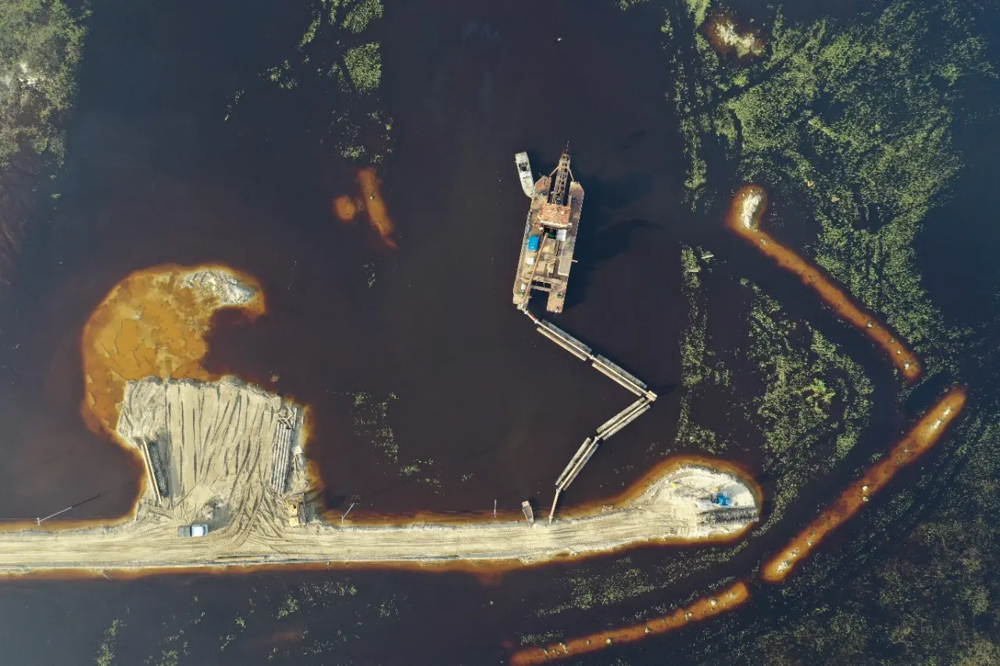

Песок: гидронамыв
Плавучие комплексы поднимают и перекачивают породу со дна водоёмов. Это способ работы там, где сухоройной технике трудно: на заболоченных участках.
- В работе
- 15 земснарядов, из них С‑42 — 10
- По пульпе
- 2000–2650 м³/час
Компонент смеси: песок
Запросить песок